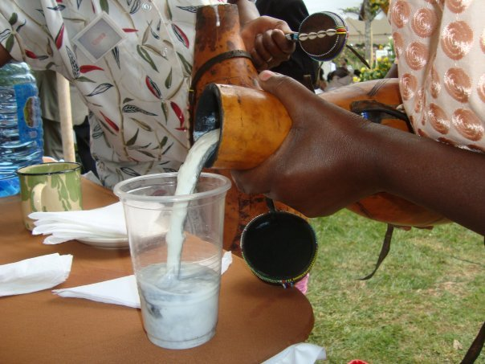
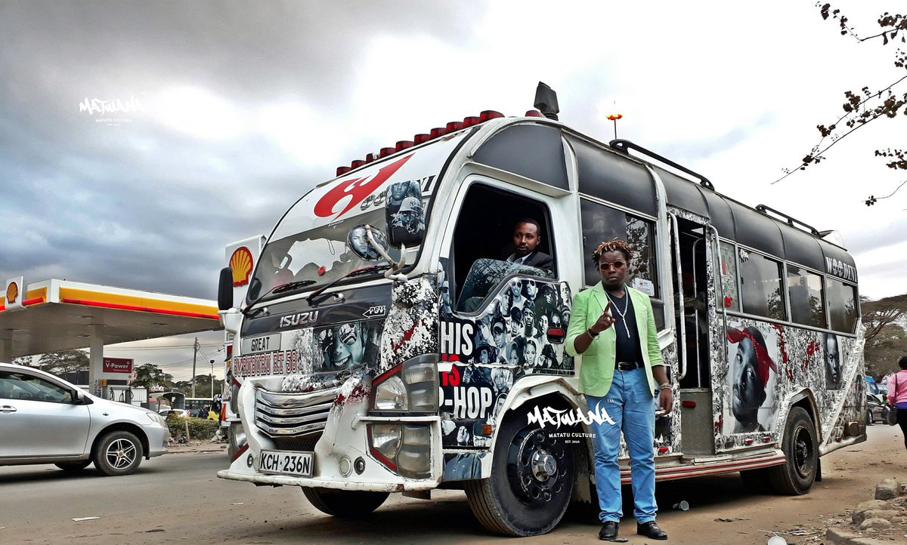

Kikuyu Culture
The Kikuyu (also known as Agikuyu)
are a central Bantu community.
They share common ancestry with
the Embu, Kamba, Tharaka, Meru
and Mbeere. Traditionally they
....Readmore
are a central Bantu community.
They share common ancestry with
the Embu, Kamba, Tharaka, Meru
and Mbeere. Traditionally they
....Readmore
Kalenjin Culture

The popular beverage in kalenjin
is mursik . This consists of fermented whole
milk that has been stored in a special gourd,
cleaned by using a burning stick. The result
is that the milk is infused with tiny bits
of charcoal...
Readmore
is mursik . This consists of fermented whole
milk that has been stored in a special gourd,
cleaned by using a burning stick. The result
is that the milk is infused with tiny bits
of charcoal...
Readmore
Somali Culture
The culture of Somali is an
amalgamation of traditions in that were
developed independently since the
proto- Somali era through interaction
with neighbouring and........ ....Readmore
amalgamation of traditions in that were
developed independently since the
proto- Somali era through interaction
with neighbouring and........ ....Readmore
Urban Culture

Urban culture is the culture
of towns and cities. The defining theme
is the presence of a great number of very
different people in a very limited space
............ ....Readmore
of towns and cities. The defining theme
is the presence of a great number of very
different people in a very limited space
............ ....Readmore
About Us
Sleek Millennial is a platform for the youth by the
youth to learn about our diverse cultures, securing our
traditions as well as open up opportunities
for youth development.
The founders of the platform are... Readmore
youth to learn about our diverse cultures, securing our
traditions as well as open up opportunities
for youth development.
The founders of the platform are... Readmore